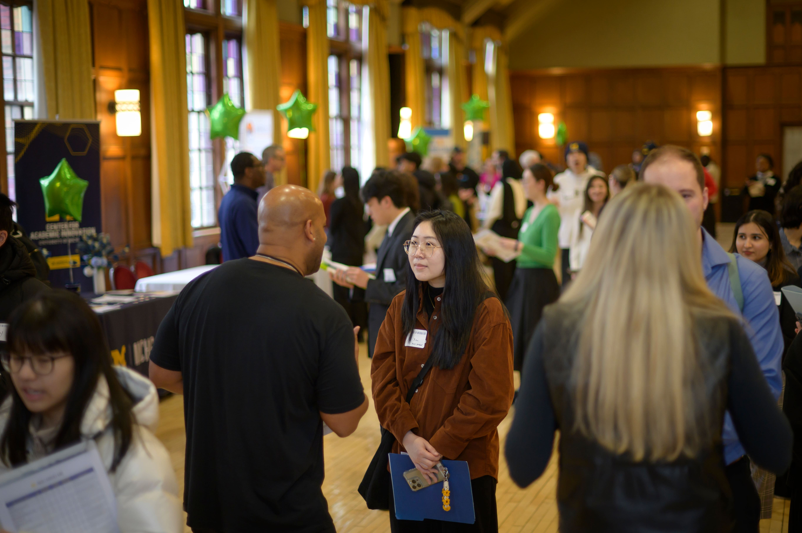

How can Networking help me achieve my career goals?
Networking is key to career growth, but reaching out can feel daunting. AI can help craft professional introduction messages, follow-up emails, and conversation starters tailored to different contacts. To use AI effectively, personalize each message with specific details about shared interests, mutual connections, or reasons for reaching out.
WHERE TO FIND ALUMNI
- UMSI LinkedIn Group | UMSI Alumni Tool
- CareerLink (employer contacts)
- UCAN
- Alumni Career Connections (see CareerLink for event details)
- Networking or recruiting events (see CareerLink for event details)
Your network: UMSI & beyond
- Friends and peers (your own personal network)
- Faculty, supervisors, mentors (your own professional network)
- UCAN
- LinkedIn search
- Networking or recruiting events (see CareerLink for event details)